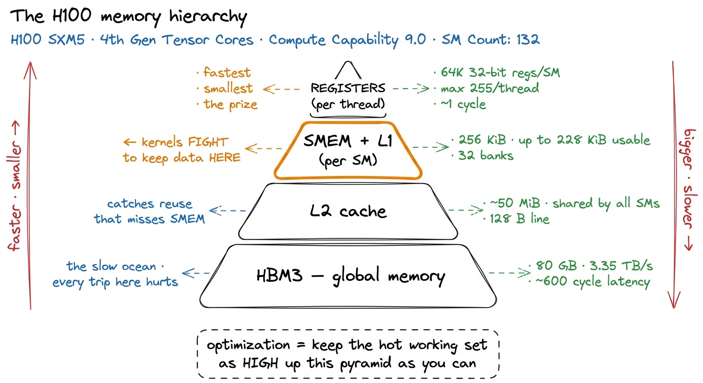
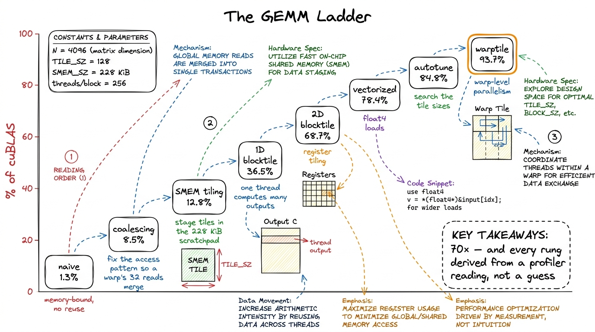
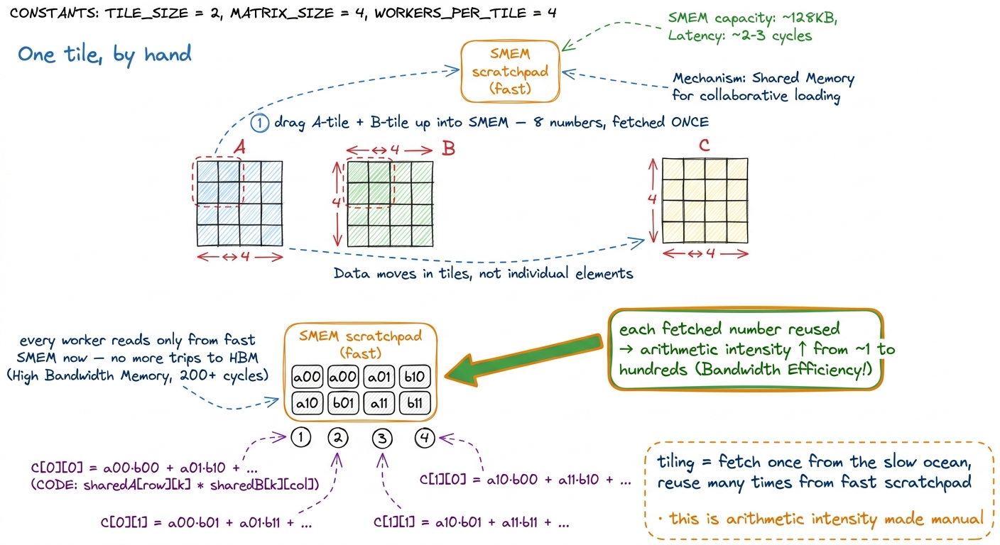
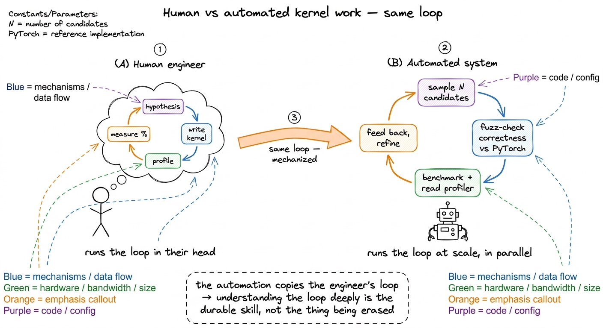

Why kernels run the world
Let me start with a claim that sounds like marketing and then spend the rest of this article convincing you it is literally true: every frontier model — the one that just wrote your code, the one drafting your emails, the one that beat a grandmaster — is, at the very bottom, a few dozen matrix multiplies running in a loop. Strip away the trillion parameters and the clever training recipe and what remains is arithmetic being ground through silicon as fast as physics allows.
Here is the surprising part. The speed of that grinding is not decided by the model. It is not decided by PyTorch, and it is not decided by the researcher who dreamed up the architecture. It is decided by a few thousand lines of hand-tuned GPU code that almost nobody on Earth can write well. Those lines are kernels, and this whole site exists to teach you how to write them.
So before we go anywhere, let me pin down the one question this article answers, because everything else hangs off it:
When your GPU is running at 3% of the speed you paid for — and it usually is — where did the other 97% go, and who is the person who can get it back?
The answer, in one word, is kernels. But that word is empty until you can see the machine underneath it, so we will build that picture from scratch. You do not need to know CUDA or what a GPU is made of — we establish every piece as we go. By the end you will understand why a chip that can do a quadrillion operations a second so often does almost nothing, and why the people who fix that are among the scarcest engineers in the field.
First, what is a kernel? (start here, assume nothing)
A GPU is a chip built for doing the same simple arithmetic to a huge pile of numbers, all at once. A CPU has a handful of powerful cores that each do complicated things quickly, one after another. A GPU flips that: thousands of tiny, dumb workers that each do one small thing, but all at the same time. If you have a million numbers to multiply and they do not depend on each other, the GPU is a monster. If you have one number that depends on the last, the GPU is bored.
A kernel is the small program you write that describes what one of those thousands of workers should do. You write the recipe once — "take your number, multiply it, add it here" — and the GPU stamps out thousands of copies of that recipe and runs them in parallel. That is the whole idea. A kernel is a per-worker recipe, launched across a swarm.1 The workers are really called threads, they are bundled into warps of 32 that march in lockstep, warps are grouped into blocks, and blocks form a grid. We will use "worker" for now and make it precise in threads, warps, blocks, grids. The lockstep-of-32 detail matters enormously later — it is why memory access patterns can make or break a kernel.
Now the load-bearing fact. When a large model generates a single token of text, essentially all of the wall-clock time is spent inside a handful of these kernels: a matrix multiply for every linear layer, an attention kernel, a normalization, an activation function. The model — the thing the researcher designed — is really just a list saying which kernels to call, and in what order. The kernels are where the machine actually spends its time and earns its electricity bill.
 figure rendering · What a kernel is. A CPU runs one strong worker in sequence; a GPU kern
figure rendering · What a kernel is. A CPU runs one strong worker in sequence; a GPU kernGet those kernels right and a training run finishes in a month instead of three. Get them wrong and you are renting an H100 — a chip rated for about 989 TFLOP/s of BF16 arithmetic2 TFLOP/s = trillions of floating-point operations per second. BF16 is a 16-bit floating point format; the number is the tensor core peak. Ordinary (non-tensor-core) FP32 math on an H100 is far lower, around 67 TFLOP/s. Which peak you are allowed to compare against depends on whether your kernel actually uses the tensor cores — a distinction that trips up a lot of napkin math. — to run it at 3% of its rated speed. People do this constantly, by accident, every day. Slow is the default. Fast is the thing you have to earn.
The stack, and the layer nobody sees
To see where the speed leaks out, it helps to draw the whole system as a stack. The interesting thing is not any single layer. It is the enormous drop in altitude as you descend — each step down, you get closer to the metal and gain more leverage over speed.
At the top is the model — a graph of tensor operations a researcher wrote in a notebook. y = x @ W + b, an attention block, a residual add. This is the language of ideas: attention, MLPs, mixtures of experts. Nothing here knows what a GPU is, and that is by design. The researcher wants to think about the shape of the computation, not the chip.
Below that is the framework — PyTorch, JAX — which turns that graph of ideas into a concrete sequence of operator calls and hands each one to the GPU. This is the layer where "a matmul" becomes "launch a kernel that computes a matmul." And it is where a startling amount of time can quietly vanish. Here is the thing to sit with: Python executes on the order of a few million operations per second. An H100 does hundreds of trillions of floating-point operations per second. Those two numbers are eight orders of magnitude apart.
Let me make that concrete, because it is genuinely hard to feel. In the time it takes Python to finish a single addition, an A100 could have done roughly 9.75 million floating-point operations.3 This exact figure is from Horace He's Making Deep Learning Go Brrrr, the canonical short read on this. PyTorch's per-operator dispatch overhead pushes small-tensor throughput down to around 280,000 ops/second — so the gap is even wider in practice than the raw Python number suggests. So if your tensors are small, the GPU finishes almost instantly and then sits there, tapping its foot, waiting for slow Python to hand it the next thing. The chip is idle not because it is slow but because nobody is feeding it. This is a real, common failure mode with its own name — overhead-bound — and we will meet it properly in a moment.
The only reason PyTorch is usable at all is a trick: it launches kernels asynchronously. It fires a kernel at the GPU and, instead of waiting for the result, races ahead to queue up the next one while the GPU chews on the last.4 This is why a naive "add timing around the operation" measurement lies to you — the Python line returns before the GPU has finished. Correct GPU benchmarking requires CUDA events and explicit synchronization; getting this wrong is the single most common mistake in homemade benchmarks. See GEMM benchmark methodology. If it can stay far enough ahead, the GPU never starves. If it can't — small tensors, tiny batches, too many little operations — the whole trillion-FLOP machine grinds along at the speed of an interpreter.
Below the framework is the kernel — the CUDA C++ (or Triton, or raw PTX) that runs on the GPU and actually does the arithmetic. This is the layer this site lives at. A kernel decides how the problem is split across the chip's Streaming Multiprocessors (SMs) — an H100 has about 132 of them, arranged across 8 GPCs — how data is staged through the memory hierarchy, and which math units light up. And here is the punchline that makes the whole field exist: two kernels computing the identical mathematical result can differ by 50× or more in speed, based entirely on these choices. Same answer. Same chip. Fifty times the wall-clock time. The difference is all craft.
And below the kernel is SASS — the actual machine instructions the GPU executes, the assembly your CUDA gets compiled down to. You do not usually write SASS, but you learn to read it, because it is the ground truth. When a profiler tells you a kernel is slow and your intuition disagrees, the SASS listing settles the argument. Every worklog on this site eventually drops down to it.
 figure rendering · The four-layer stack. Ideas at the top, machine instructions at the bo
figure rendering · The four-layer stack. Ideas at the top, machine instructions at the boThe thing to really notice is that leverage increases as you go down. A better model architecture is a research bet that may or may not pan out. A better kernel is a guaranteed win that applies to every model that ever calls it — forever, retroactively, for free. FlashAttention did not change the mathematics of attention by one bit. It changed the kernel. And in doing so it changed what context lengths the entire field considered feasible, which changed what models people even attempted to build.5 This is also why genuinely better algorithms struggle to win in practice: a new attention variant with better asymptotic complexity still has to beat FlashAttention on real wall-clock time, and FlashAttention has years of brutal hand-tuning behind it. The kernel, not the algorithm, is frequently the thing you are actually competing against. See FlashAttention-1.
The one diagnostic: what is this kernel waiting on?
Before we can talk about fixing slow kernels, we need the single most important question in the whole discipline. Every kernel, at every instant, is waiting on one of three things. Naming which one is the first move a kernel engineer makes, always. Horace He calls these the three regimes, and they are worth burning into memory.
Let me borrow his analogy, because it is the best one I know. Picture a factory with a warehouse next to it. The factory floor is where the actual work happens — that is your compute, the math units on the GPU. The warehouse is where the raw materials sit — that is memory, the numbers your kernel needs. Trucks run back and forth between them — that is memory bandwidth, the rate at which you can move numbers into the factory.
Now, three things can bottleneck this operation:
Compute-bound. The factory floor is packed, every worker busy, and the trucks easily keep up. You are limited by how fast the machines compute. This is the happy place — you are actually using the silicon you paid for. Big dense matrix multiplies live here.
Memory-bound. The factory floor is half-empty, workers standing around, because the trucks can't deliver materials fast enough. You are limited by bandwidth, not math. The workers could go faster but they have nothing to work on. A shocking fraction of real deep-learning operations live here: element-wise activations, normalizations, attention at short sequence lengths.
Overhead-bound. The factory is idle and the trucks are parked, because the manager — Python, the framework — hasn't even told anyone what to do yet. You are limited by dispatch, not by the chip at all. This is the small-tensor regime we met above.
 figure rendering · The three regimes as a factory. Compute-bound = floor full; memory-bou
figure rendering · The three regimes as a factory. Compute-bound = floor full; memory-bouWhy does naming the regime come first? Because it tells you which optimizations are even worth trying. If a kernel is memory-bound, throwing more math cleverness at it does nothing — the workers are already idle. You have to move fewer bytes or move them faster. If it is overhead-bound, tuning the kernel is pointless — you need to give Python less to do (bigger batches, fused ops, CUDA graphs). If it is compute-bound, now the math tricks pay off. Working on the wrong regime is the most common way smart people waste a week. This diagnostic is important enough that it gets its own article: the three regimes, and its quantitative twin, the roofline model.
Why compute-vs-memory is a moving target (and getting worse)
Here is a question worth pausing on. If memory-bound is such a common trap, why don't the chip designers just add more memory bandwidth until it stops being a problem?
They try. But they are losing the race, on purpose, for economic reasons. Compute is growing faster than bandwidth, and it has been for years. Every GPU generation adds FLOP/s faster than it adds bytes-per-second from memory. An H100 pairs its ~989 BF16 TFLOP/s against 3.35 TB/s of HBM3 memory bandwidth6 HBM = High Bandwidth Memory, the stacked DRAM sitting right next to the GPU die. 3.35 TB/s sounds enormous, and it is — but hold it against 989 TFLOP/s and the ratio is the whole story. See HBM & global memory. — and that ratio only gets more lopsided over time.
Let me do the napkin math that shows why this matters, because it is the beating heart of the whole field. A BF16 number is 2 bytes. So 3.35 TB/s of bandwidth is about 1.67 trillion BF16 numbers per second flowing off memory. Meanwhile the chip can do 989 trillion operations per second. Divide them: for every number you fetch from memory, the chip has time to do about 590 operations on it before the next number could even arrive.
Sit with that number. If your kernel does fewer than ~590 math operations per number it loads, the math finishes early and the chip waits on memory — you are memory-bound, and it is memory's fault, not yours. This ratio of "operations done per byte moved" is called arithmetic intensity, and it is the single most useful number in kernel engineering.7 The exact break-even ratio depends on the precision and which peak you compare against; the point is the shape, not the third decimal. A unary op like torch.cos() has arithmetic intensity near one — one multiply per number loaded and stored — which is why element-wise ops are almost always memory-bound and why fusing them is such a reliable win. See arithmetic intensity. A big dense matrix multiply has high arithmetic intensity — each loaded number gets reused across a whole row of outputs — which is exactly why matmuls can be compute-bound and can actually use the chip. An element-wise activation has intensity near one, which is why it is always memory-bound.
The consequence of the widening ratio is profound and it is why this is a growing field, not a shrinking one: more and more workloads become memory-bound by default as the hardware evolves. And the tricks that move fewer bytes — fusion, tiling, lower precision, and above all staging hot data through the fast on-chip memory instead of trekking back to the slow ocean of HBM — keep getting more valuable, not less. The kernel engineer's job is increasingly a bytes-movement job wearing a compute-shaped hat.
The mental model to keep: the memory pyramid
If arithmetic intensity is the number to remember, the memory pyramid is the picture to keep. Almost every optimization in this entire site is, at bottom, the same move: keep the data you are actively using as high up this pyramid as you possibly can.
The pyramid exists because of an unavoidable physical trade-off: memory that is fast is small and expensive, and memory that is big is slow and cheap. So chip designers build a hierarchy — a tiny sliver of blazing memory right next to the math units, backed by progressively larger and slower pools as you go down.

figure rendering · The memory pyramid. Every kernel optimization is, ultimately, a fightWalk it from the bottom. HBM3 is the 80 GB of global memory — the slow ocean. It is where your weights and activations actually live, and a round trip to it costs hundreds of cycles.8 Roughly 600 clock cycles of latency for an HBM access, versus ~1 cycle to read a register. That factor of ~600 is why hiding memory latency behind useful work — the whole point of double buffering and cp.async — is such a central technique. Above it is the L2 cache, ~50 MiB shared by every SM, which quietly catches reuse. Above that, and this is the level kernels fight over, is the shared memory and L1 — a scratchpad inside each SM, up to 228 KiB, that the kernel controls directly. And at the very top, the register file: private, tiny, one-cycle-fast, the prize.
When we say a kernel "tiles" a matrix multiply, this is what it means: chop the giant matrices in HBM into small tiles, drag one tile up into the fast SMEM scratchpad, and then reuse it many times before letting it go — so each expensive trip to the slow ocean pays for many cheap operations. Tiling is arithmetic intensity, made manual. That single idea is 80% of GEMM optimization. Keep this pyramid in your head; we will refer back to it constantly.
What "getting it right" actually looks like — the GEMM ladder
Here is the part that makes this whole discipline teachable, and it is the reason we chose GEMM — general matrix multiply — as the spine of the course. Kernel work is not mystical. It is measurable. Correctness is a numerical tolerance check against a reference. Performance is wall-clock time against a reference. There is no arguing with either. The machine tells you plainly when you are right, which, honestly, is the most satisfying kind of engineering there is.
So take the single matrix multiply that every linear layer bottoms out in. The naive version is the obvious one — one worker per output element, three lines of loops:
__global__ void sgemm_naive(int N, const float* A, const float* B, float* C) {
const uint m = blockIdx.y * blockDim.y + threadIdx.y;
const uint n = blockIdx.x * blockDim.x + threadIdx.x;
if (m < N && n < N) {
float acc = 0.0f;
for (int k = 0; k < N; ++k)
acc += A[m * N + k] * B[k * N + n];
C[m * N + n] = acc;
}
}Read it slowly. Each worker computes one output element C[m][n]. It walks the m-th row of A and the n-th column of B, multiplying and accumulating. It is correct. It runs. And it reaches about 1.3% of cuBLAS — NVIDIA's hand-tuned library, the yardstick that a team of specialists has been optimizing for fifteen years.9 cuBLAS is the reference, not the goal, for a learner — NVIDIA ships architecture-specific assembly tuned by people who do only this. Reaching 90-something percent of it with kernels you derived from your own measurements is the realistic and genuinely impressive target. See the cuBLAS baseline.
Why is it so bad? Use the pyramid and the arithmetic-intensity idea we just built. Every one of those A[...] and B[...] reads goes all the way down to the slow ocean of HBM, and worse, neighboring workers re-fetch the same numbers over and over because nobody staged anything in the fast scratchpad. The kernel has terrible arithmetic intensity — it is drowning in memory traffic, doing almost no work per byte moved. It is a textbook memory-bound kernel, and the pyramid tells us exactly why. Note the diagnosis came for free from the mental models — we did not have to guess.
The remaining factor of seventy back to cuBLAS is not one clever trick. It is a ladder of about ten of them, each justified by a profiler reading rather than a hunch. On this site we climb that ladder one measured rung at a time, and every rung is a self-contained worklog with the same rhythm: a hypothesis about the current bottleneck, the smallest kernel that tests it, a profile or SASS listing as evidence, and a bold number saying exactly how much we won.

figure rendering · The GEMM ladder. Ten kernels, a 70× climb, each step chosen by the botNotice the shape of that climb. The first big jump — naive to coalescing, 1.3% to 8.5%, more than a 6× win — comes from a single change: making the 32 workers in a warp read from adjacent memory addresses so their reads merge into one transaction instead of 32.10 This is memory coalescing, pure bytes-movement — we do not change the math at all, we change the addresses the warp touches so the hardware can service them in one wide transaction. It is the cleanest possible example of "same answer, faster kernel." See memory coalescing. No new math. Just a different access pattern. The pyramid and the warp-of-32 detail predicted this win before we ran anything.
The next jumps come from dragging tiles up the pyramid into shared memory, then having each worker compute many outputs so loaded data gets reused from fast registers, then loading four numbers at a time with float4, then searching over tile sizes, then organizing the work by warp. Every rung is one idea, tested in isolation, measured. By the top we reach 93.7% of cuBLAS — a hair away from code NVIDIA has tuned for fifteen years, reached by understanding the machine, one measurement at a time. The full climb is the GEMM ladder recap; it starts at kernel 1, naive.
Zoom all the way in: one tile, by hand
Abstractions like "tiling" stay slippery until you do the arithmetic for a single tile by hand, so let me shrink the whole thing down to a size you can hold in your head. Forget the 4096×4096 matrices. Imagine multiplying two 4×4 matrices, and imagine our fast scratchpad can only hold a 2×2 tile at a time.
Without tiling, computing the top-left 2×2 block of the answer means each of those 4 output workers walks a full row of A and a full column of B straight from the slow ocean — and the four workers re-read overlapping rows and columns, because output C[0][0] and C[0][1] both need row 0 of A. That is wasted trips down the pyramid.
With tiling, we do it in stages. We drag the top-left 2×2 tile of A and the top-left 2×2 tile of B up into fast scratchpad — that is 4 + 4 = 8 numbers fetched from HBM, once. Then all four output workers do their multiply-adds reading only from the fast scratchpad, reusing those 8 numbers. Then we drag the next pair of tiles up, accumulate, and we're done. Each number from the slow ocean got fetched once and used twice. Scale the tile from 2×2 up to the 64×64 or 128×128 tiles real kernels use, and each fetched number gets reused across the whole tile — arithmetic intensity climbs from ~1 into the hundreds, and the kernel crosses from memory-bound into compute-bound. That crossing is the entire game.

figure rendering · Zooming into a single 2×2 tile. Drag it up the pyramid once, reuse itThis is the whole trick, scaled up and repeated. Every advanced technique on this site — double buffering that overlaps the next tile's fetch with the current tile's math, FlashAttention that tiles attention so it never writes the giant N×N score matrix to HBM at all — is this same move with more cleverness. Fetch once, reuse many, stay high on the pyramid.
Why this layer is scarce (and stays scarce)
If kernels are this important, you would expect them to be a solved, commoditized skill by now — a well-trodden path with abundant tutorials and any competent engineer able to walk it. The reality is the opposite, and the reasons are structural, not accidental. This is worth understanding, because it is why the skill is worth learning in 2026 rather than something the tools already did for you.
Reason one: the knowledge isn't where knowledge usually lives. Modern engineers — and modern AI models — learn by reading mountains of public code. But CUDA makes up roughly 0.073% of a large public code corpus like The Stack — a rounding error.11 Figure from Simon Guo's survey of automated GPU-kernel generation. The practical consequence is sharp: today's frontier models have seen very little well-tuned kernel code during training, so they are markedly weaker at writing kernels than at writing web apps. It is one of the rare domains where a well-trained human still comfortably beats the machine. Every general-purpose model you use has read millions of React components and almost no well-tuned GEMM kernels. So this is a domain where an ordinarily strong LLM is unusually weak — which means the humans who can do it well are unusually valuable and hard to replace.
Reason two: the ground keeps moving. Every hardware generation rewrites the rulebook. Hopper (sm_90a) introduced thread-block clusters, distributed shared memory, the Tensor Memory Accelerator (TMA) for bulk async copies, and wgmma warpgroup matrix instructions — none of which existed before. Then Blackwell did it again with tcgen05, Tensor Memory (TMEM), CTA pairs, and NVFP4. A kernel hand-tuned to perfection for one architecture is decent-but-unremarkable on the next.12 It took roughly two years after Hopper shipped before the field had a truly efficient FlashAttention port for it — that is how long the frontier of a single technique lags a single new architecture. See what changed A100→H100→B200. Porting across vendors is worse — one team in Guo's survey spent a full quarter fighting HIP kernels on AMD hardware whose raw specs were actually superior. The specs were never the problem; the kernels were. The durable skill is not "know the current tricks." It is "know how to find the tricks a new chip rewards" — and that transfers slowly and expensively, which is exactly why it commands a premium.
Reason three: the memory-vs-compute gap we did the math on keeps widening, so the payoff of kernel craft keeps growing. This is not a field on its way to being automated into irrelevance. It is one where the value of the skill compounds with every hardware generation.
But won't the models automate this away?
Let me address the obvious objection head-on, because you are probably thinking it. If AI is getting good at writing code, won't it just learn to write kernels too, and won't this whole skill evaporate?
Here is the honest answer, from the people actually building the automated systems. The strongest current approaches do not conjure a perfect kernel in one shot. They work by sampling many candidate kernels, checking each for correctness against a PyTorch reference by numerical fuzzing, benchmarking the survivors, feeding the profiler data back to the model, and looping — scaling test-time compute through parallel sampling and repeated refinement. Notice something: that loop — hypothesize, test correctness, profile, refine — is exactly the loop a human kernel engineer learns to run in their head. The systems are not replacing the skill. They are mechanizing the outer loop of a skilled human's process, which means the human who understands that loop deeply is the one who can direct, debug, and trust the machine.
The researchers say so directly: their stated goal is reducing the difficulty and speeding up kernel development, and they explicitly do not expect kernel engineers to be "fully replaced anytime soon." The framing across the field is amplification, not replacement.

figure rendering · The automated systems mechanize the exact hypothesize-test-profile-refSo learning this by hand is not obsolete. It is the thing being automated — which is precisely why understanding it deeply is the most durable version of the skill. You do not want to be the person the tool replaces. You want to be the person who directs the tool, because you are the only one who can tell when its clever-looking kernel is quietly wrong or quietly slow. See the automated-kernels survey and Kevin, RL, and KernelBook.
What the rest of this site delivers
The course is built around two intertwined tracks, and you can read them in either order.
The concept track builds the mental models you need to interpret what you see. It starts with the three regimes — the diagnostic we just met, the question "what is this kernel waiting on?" — then the roofline model that makes it quantitative, arithmetic intensity, the H100 memory hierarchy from HBM through L2 down to the shared memory and L1 on each SM, warps and occupancy, the tensor cores, and the Hopper-and-Blackwell features (wgmma, TMA, tcgen05) that define the modern frontier.
The worklog track is the GEMM ladder above — kernel by kernel — plus attention kernels and the async-pipeline tricks that hide memory latency behind compute. These are worklogs in the honest sense: we show the kernels that were slow, the profiles that explained why, and the reasoning that picked the next move. Nothing is presented as obvious in hindsight, because none of it was. And it all ties back to production: the same techniques run right now inside vLLM, FlashAttention, and DeepSeek's FlashMLA and DeepGEMM — this is not academic.
The reason to learn this — beyond the fact that the machine tells you plainly when you are right — is that it is scarce, high-leverage, and increasingly hireable. Every AI company on Earth is bottlenecked on exactly this skill; the wins are measurable and un-fakeable; and the layer is too specialized, too fast-moving, and too underrepresented in training data for the current generation of models to have automated away.
So we begin where every good kernel engineer begins: not by writing code, but by asking a single question about a piece of code that is already running. What is it waiting on? That is the three regimes, and it is the next thing to read.